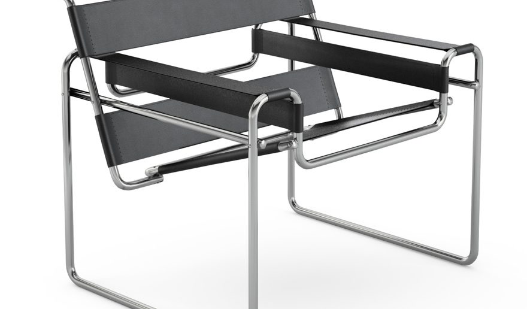

Descripción
La silla wassily es un diseño moderno hecho por por marcel breuer en la escurla bauhaus, inspirado en la estructura tubular de una bicicleta, es iconica poque fue la primera silla hecha de acero cromado combinado con cuero / lona tensada.
Materiales
- Estructura de acero cromado.
- Asiento y posabrazos de cuero/lona tensada.
Contexto
Wassily se inspiró en las estructuras y materiales de una bicicleta utilizando los mismos materiales para crear una silla cómoda y resistente diseñada en 1925 con una estética radical por su originalidad de materiales y estructura.